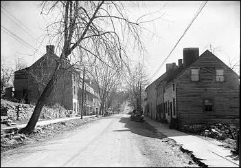
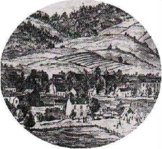
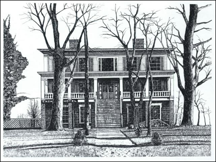

French Family Association
The Official Website of the Surname French

Waterford, Loudoun Co., Virginia, a town that attracted Quakers from Pennsylvania through the end of the 18th century.
Chart #190, James D. French, 1690
Waterford, Loudoun Co., VA
Also Front Royal, Warren Co., VA and Gordonsville, Orange Co., VA
This chart updated by Mara French on 6/4/08. Numbers in brackets [ ] refer to the bibliography at the end of this chart. An asterisk (*) shows continuation of that line. Send any corrections or additions to this chart to marafrench@mindspring.com. Revisions: 1991, 2008.
This family does not seem to connect to Hugh French of Loudoun Co., VA (FFA Chart #36) or to John French of Tazewell Co., VA (FFA Chart #12). We have been unable to find any information about the parentage of James D. French.
First Generation
1.1* James D. French, b. ca. 1790, m. ca. 1820-23 to Clarinda Hough [2], of Waterford, Loudoun Co., VA. Clarinda was b. ca. 1802, d. 23 Sep 1835, the dau. of Thomas Hough and Margaret Skinner. James d. 29 Oct 1824 in Waterford after a short but severe illness, when his children were mere infants. Clarinda died only 11 years after James. See the History of Waterford, VA, for more information on the Hough family.
November 9, 1824: p.3: Public Sale. Will be offered at public sale, on Friday the 12th day of November, instant, at the late residence of James D. FRENCH, deceased, in the town of Waterford, all the personal property of said decedent, consisting in part of Horses, Cows Sheep, Hogs Two old Wagons and Geers, one Gig, one Sleigh, a set of Blacksmith's Tools, Wheat in the mill and Stack, &c, &c. The Wheat and Hogs will be sold on a credit of thirty days; the balance of the property on a credit of nine months, when the sum exceeds five dollars, the purchaser giving bond with approved security.--For all sums of five dollars and under the Cash will be required. Sale to commence at 10 o'clock, A.M. George W. French, Administrator
James died when his two children were only infants, and there is no indication that Clarinda remarried. The estate was managed by George W. French, who might have been James’ father or brother.
Second Generation
Children of James D. French, 1.1
2.1 William Thomas French, b. 1822, m. Rachael Hough on 4 Feb 1848 in Loudoun Co., VA [3]. She was the dau. of William Hite Hough and Mary Ann Chalmers [5] who were m. 16 Jan 1817 [8]. See the William Hite Hough House in Waterford website.

Wartime engraving of Front Royal in 1862
2.2* James Hanson French, b. 16 Jan 1824 near Waterford, VA, d. 1896 or 1898 at Front Royal, Warren Co., VA, occupation First Cashier at the Bank of Warren (which was established in 1872) in Front Royal, VA. James m. Mary Elizabeth House. James enlisted in Co. E, 12th Regiment, VA Cavalry of the famed “Laurel Brigade,” and was seriously wounded 22 Sep 1863. He served thereafter as wardmaster in the General Receiving Hospital at Gordonsville, Orange Co., VA. James Hanson French was a devout Christian whose extant papers testify of a life of prayer and faith [1] [2].
With the help of a recent restoration in Front Royal, VA, one of Front Royal's oldest commercial buildings stands today in its original form. The first Bank of Warren building occupies a narrow lot near the corner of East Main and Chester Streets (222 East Main Street). The one-story, brick, commercial building retains its original, pedimented, front-gable form as well as its decorative cornice brackets. The storefront has recently been restored to its original configuration. It is across the street from the Amiss Building.

Exchange Hotel, Gordonsville, VA. Many of the 7th Georgia Cavalry were wounded and carried to Exchange Hotel (Gordonsville, VA, Receiving Hospital, now a museum). In the month of June 1864 during the Civil War, over 6000 wounded were brought to Gordonsville Receiving Hospital.
The core of the present medical center in Gordonsville was built ca. 1885 by James Strange French, a sometime layer, hypnotist, and inventor who published his novel Elkatawa in Aug 1836; or The Prophet of the West before arriving in Gordonsville in 1884. Mr. FRENCH is the author of a Life of David Crockett, and also of a novel called Elkswatawa, a denunciatory review of which, in the Southern Messenger, some years ago, deterred him from further literary attempts. Should he write again, he will probably distinguish himself, for he is unquestionably a man of talent. We need no better evidence of this than his MS., which speaks of force, boldness, and originality. The flourish, however, betrays a certain floridity of taste.
James S. French was b. 12 Jun 1807 in Valparaiso, Dinwiddie, VA, d. 7 Feb 1886 in Gordonsville, VA, m. 6 Jun 1850 in Willow Grove, Tazewell Co., VA to Laura J. George. James S. French was the son of William French and Maria Duval [10]. They had son John Floyd French, b. 1862 [10]. James’ father, William, was b. ca. 1783 in Norfolk, VA and d. 26 Aug 1848 in Norfolk, VA. They had 7 children: George French (probably d. young); James S. French; Euphemia French b. ca. 1815 in VA; Robert Strange French b. 8 Jan 1815; Maria French b. ca. 1820; Daniel DuVal French b. ca. 1822; and George French b. ca. 1826 [10]. It is unknown how this family fits into FFA Chart #190.
Third Generation
Children of James H. and Mary E. (House) French, 2.2
3.1 Anna Cora French, b. 10 Mar 1854 in Warren Co., VA, m. 25 Jan 1875 to M. Scott Weaver, son of John D. Weaver, d. 30 Apr 1904 [2]. They had children Lizzie, Ella Virginia, John Hanson, Clara Gertrude, Charles French, and Lida Corrine Weaver [2].
3.2 Charles W. French, b. 1867, m. Etta B. Pulliam, d. 6 Jul 1928 [2]. The Pulliams may have arrived in Virginia in the 1600s aboard the “Hopewell” from London. There are records showing an Edward Augustus Pulliam arriving in Henrico County, Virginia, on the “Hopewell” around 1636.
Bibliography of James D. French
[1] Supplement to the “Centennial History of the Bank of Warren, 1872-1972” by Laura Virginia Hale.
[2] FFA member M. Douglas Jr. and Linda Dodd, 5425 N. Bath Blvd., Northampton, PA 18067.
[3] FFA member Marlys (Cindy) Louise (Halcomb) Sawyer, 2204 Vichy Rd., Rolla, MO 65401.
[4] Loudoun Co., VA Marriage Records to 1881, by Jewell.
[5] Hough and Related Families, compiled by Curtis Hough. Website:
http://www.famgen.net/hough/surnames.htm,
Email: countryboy_36@hotmail.com
(good in 2003).
[6] Genius of Liberty, Transcriptions for 1824, website:
http://www.rootsweb.ancestry.com/~valoudou/news/gen1824.htm
[7] The History of Waterford, Virginia, A National Historic Landmark,
website:
http://www.waterfordhistory.org/index.shtml
[8] Owings Stone Family website: http://www.owingsstone.com/index.php
[9] A Chapter on Autography, by Edgar A. Poe, website:
http://www.eapoe.org/works/misc/autogc2.htm#frenchjs
[10] Ancestry.com OneWorld, Cathy Forkey, rfc@dconn.com
[11] Virginia Military Dead from the Library of Virginia, website:
http://www.lva.virginia.gov/whatwehave/mil/vmd/